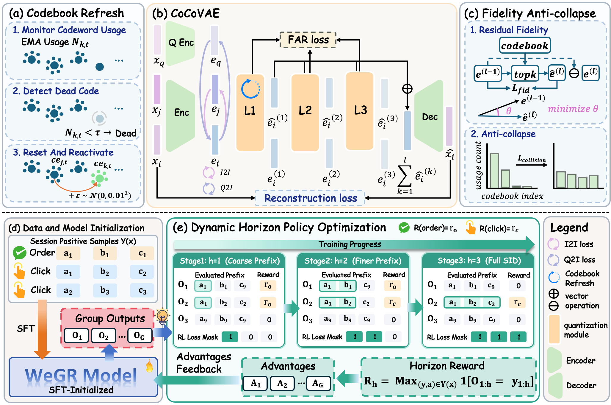
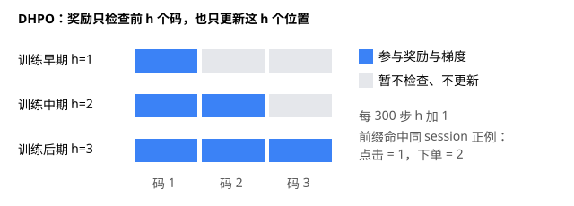
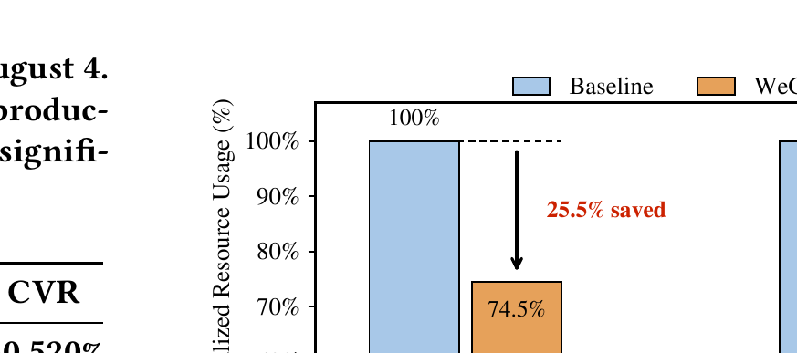
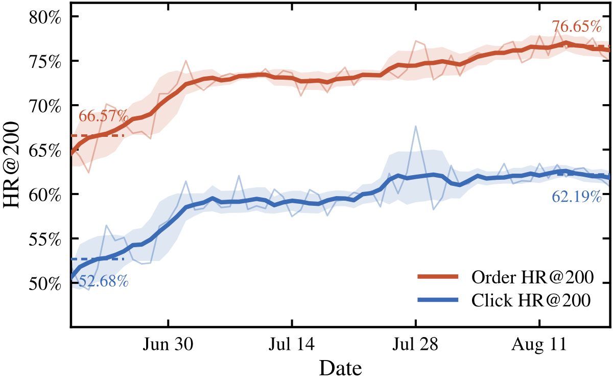
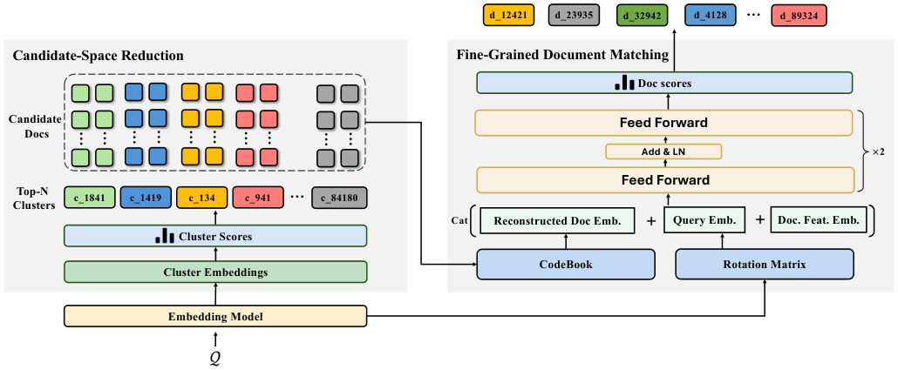
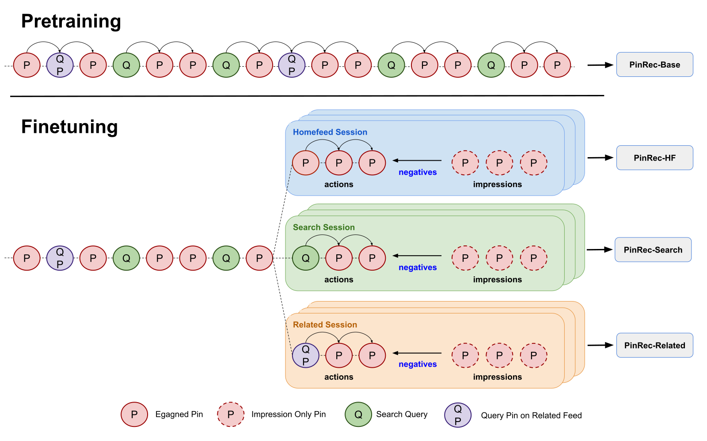

Contents · 6 sections
1The problem: generative retrieval stalls on codes and rewards2The encoder: behavior signals go into continuous vectors first3DHPO: a reward horizon that grows from short to long4Offline results: the encoder contributes a lot, RL a little5Online impact, resources and long-term behavior6Limitations and practical takeawaysSHARE
WeGR is the generative retrieval system now serving WeChat e-commerce search. A GPT-2 Small model reads the query and user context and writes out item codes token by token, replacing most of the candidates from the conventional multi-channel retrieval. The paper tackles two problems: how to assign item codes that carry co-click behavior without leaving most codes idle, and how to run reinforcement learning on clicks and orders when rewards are too sparse to learn from. In a six-week online test, the version that cut 80% of the other channels' candidates raised orders by 2.539% and CTR by 1.508%, while CPU and GPU usage fell by 25.5% and 26.1%. Offline, the net gain from the RL stage is modest: click HR@6 is only 0.5 points above supervised training, and nearly all of it comes from one design, the gradually lengthening reward horizon.
1. The problem: generative retrieval stalls on codes and rewards
Conventional e-commerce search is a pipeline. Several retrieval channels, such as inverted indexes and vector search, each pull a batch of candidates, which are merged and passed to pre-ranking and ranking. Every extra channel adds maintenance cost and more items for pre-ranking to score. Generative retrieval takes another route. Each item gets a short sequence of discrete codes, called a semantic ID (SID below), and the model generates that sequence like a sentence; whichever code it writes, that item is retrieved.

There are two common ways to build SIDs. One takes item vectors from an upstream model and clusters the residuals layer by layer. Codes are used fairly evenly, but behavior information lives only in the upstream vectors and is gradually washed out by quantization. The other learns codes and codebooks end to end, so behavioral supervision can be added directly. However, each layer updates only the codeword nearest the input, many codewords never get trained, and large numbers of items end up crowded onto a few codes, which the authors call codebook collapse.
On the generation side, the problem is reward sparsity. When a user clicks an item, the model must get all three code layers right to earn any reward. Out of 8 samples, often none hits, so every reward in the group is 0. GRPO, an RL algorithm that compares rewards within a group of samples, then computes zero advantage for all of them, and the group teaches nothing. Existing fixes either enlarge the sample count, which costs more, or use a ranking model's scores as dense rewards, which brings in exposure bias and business rules.
2. The encoder: behavior signals go into continuous vectors first

The encoder, CoCo-VAE, assigns item codes with three-layer residual quantization, with codebook sizes of 16384, 128 and 128. Behavior signals are applied only to the continuous vectors before quantization, through two contrastive losses. Items clicked under the same query are pulled toward the query, and items that often co-occur in users' past interactions are pulled toward each other (the paper does not say whether co-occurrence means the same session or some other scope); both losses use the other items in the batch as negatives. The authors deliberately avoid forcing such items to share codes in the discrete codebook, since that would squeeze semantically different items under one SID.
Collapse is prevented in three places. The first is codebook refresh on the first layer. A moving average tracks each codeword's recent usage, and any codeword below a threshold is re-initialized from an active codeword plus a little Gaussian noise. Only the first layer is refreshed, because frequent resets in deeper layers would disrupt the residual decomposition. The second is a fidelity loss. Each sample updates not just the nearest codeword but a similarity-weighted blend of several close ones, which must approximate the input residual, so more codewords get gradients. The third is a collision penalty, which measures how much two samples' soft assignments over codewords overlap and penalizes larger overlap.
The paper also reports codebook utilization: the share of codes that actually receive items. Both CoCo-VAE and residual clustering use 100% of the 16,384 first-layer codes. The three layers can form 16384×128×128 (about 270 million) code combinations; the share actually used by items is 22.17% for CoCo-VAE and 21.33% for residual clustering, about the same. Forcing balance on the third layer lifts the combination figure to 52.30% but makes retrieval worse, so the authors take this as a reminder that utilization is only an intermediate metric. Forced balance packs unrelated items into the same code, and what matters in the end is retrieval quality.
3. DHPO: a reward horizon that grows from short to long
DHPO (dynamic horizon policy optimization) is the paper's modification of GRPO, and the idea is simple: if getting the whole sequence right is too hard, check only the first code at first. If the first generated codes match the first codes of an item clicked or ordered in the same search, the sample earns a reward: 2 for an order, 1 for a click, and the highest one when several items share the prefix. Every 300 training steps, grows by 1 until it covers all three layers, at which point the reward falls back to the original full-item hit.

The key detail is that the update range tracks the reward range. A matching prefix shows only that the first codes are correct; the rest are unverified. If the reward were applied to the whole sequence, the model would mistake "right category" for "right item". So DHPO computes the policy loss only over the first positions.
The authors also add multi-positive supervised fine-tuning. Every item the user clicked in the same search counts as a correct answer under a next-token loss, with weight 0.5. It acts as a safety net. When rewards in a group show no variation and the RL signal vanishes, the model still has stable supervision and does not lose the retrieval ability learned in the supervised stage. Online, each day runs supervised training first and then RL.
4. Offline results: the encoder contributes a lot, RL a little
The offline data are 31 days of search logs from June–July 2026, with the first 30 days for training and the last for testing; the click and order test sets each hold 20,000 searches. Because there is only one test day, none of the offline gaps below come with variance. All RL methods start from the CoCo-VAE supervised model.
| Method | Click HR@6 | Click HR@200 | Order HR@6 | Order HR@200 |
|---|---|---|---|---|
| Residual clustering + supervised | 0.2641 | 0.4869 | 0.4051 | 0.6613 |
| CoCo-VAE + supervised | 0.2759 | 0.5093 | 0.4103 | 0.6732 |
| Plain GRPO | 0.2588 | 0.4437 | 0.3910 | 0.6098 |
| GRPO + multi-positive supervision | 0.2764 | not reported | 0.4160 | not reported |
| Ranker scores as reward | 0.2790 | not reported | 0.4172 | not reported |
| DHPO | 0.2810 | 0.5108 | 0.4217 | 0.6763 |
HR@K asks one yes/no question per search: does any of the top K retrieved results include an item the user clicked (or ordered)? It scores 1 or 0 and is averaged over all test searches. The encoder gives the clearest gain: click HR@6 rises from 0.2641 to 0.2759 and HR@200 from 0.4869 to 0.5093. In the ablation, removing codebook refresh, the fidelity loss or the collision penalty drops click HR@6 to 0.2371, 0.2437 and 0.2492, all below residual clustering without behavior signals. Removing either behavior signal drops it only to 0.2650 or 0.2704. So CoCo-VAE's gain depends first on a healthy code space, with behavior signals adding on top.
The RL side deserves a closer look. Applying GRPO directly makes every metric worse than supervised training; click HR@200 falls from 0.5093 to 0.4437, which shows that sparse rewards can damage existing retrieval ability. Adding multi-positive supervision brings it back to 0.2764, nearly the same as supervised training's 0.2759, so it only recovers the loss. The real net gain comes from the dynamic horizon, which adds another 0.0046 to reach 0.2810. Relative to supervised training, DHPO raises click and order HR@6 by 1.85% and 2.78%, with smaller gains at HR@200.
The authors also compare against using an industrial ranker's continuous scores as dense rewards, and DHPO comes out slightly ahead. Their explanation is that the ranker is trained only on items already filtered by upstream retrieval, so its scores are unreliable on the long-tail items generative retrieval explores, and group normalization amplifies that noise into spurious advantages. The explanation is reasonable, but the gap is only 0.002 to 0.0045 and the paper reports no variance across runs, so the offline result is directional evidence at best.
5. Online impact, resources and long-term behavior
The online A/B test ran from June 22 to August 4, with all results at p<0.05, and replaced the old retrieval in three steps.
| Version | Orders | CTR | CVR | Mean latency |
|---|---|---|---|---|
| V1.0 adds one channel | +1.579% | +1.108% | +0.520% | unchanged |
| V1.1 cuts 60% of other channels' candidates | +1.962% | +0.884% | +0.950% | −15.6 ms |
| V1.2 cuts 80% of other channels' candidates | +2.539% | +1.508% | +1.381% | −21.7 ms |
Results improve as more is cut, so the gain does not come from a larger candidate set; WeGR's candidates are better than the ones they replace. In V1.2, items entering pre-ranking fall by 38.10%, yet CPU and GPU savings are only about a quarter, because fixed costs such as retrieval and request parsing remain.

By user group, the gains concentrate on users with little or fast-changing history. The authors split users into six lifecycle groups: first new versus existing users, then each by recent usage into active, reactivated (stopped for a while and recently came back) and lapsed (inactive for a longer time), crossing into six groups. A "reactivated new user", for example, signed up recently, stopped for a while and has just come back. The paper does not give the day thresholds. Reactivated new users see orders rise 9.855%, lapsed new users see CVR rise 7.382%, and active existing users see orders rise only 1.611%. The authors argue this shows that semantic codes fill in the signal conventional retrieval lacks when behavior data are sparse. By query frequency, low-frequency queries gain 3.24% in orders, and high-frequency queries gain 3.51% in orders and 2.73% in CTR. Mid-frequency queries gain 0.99% in CTR with no significant change in orders or CVR, and the authors admit the mechanism behind this pattern is still unclear.

Over two months, the seven-day mean of online click HR@200 rose from 52.68% to 62.19% and order HR@200 from 66.57% to 76.65%, with visibly narrower fluctuation, both above the offline numbers. The authors attribute this to daily updates accumulating more data. The curves, however, step up once in late June and again in late July, and the paper does not say whether these match the version switches. As WeGR takes over more exposure slots, users' clicks increasingly land on items it retrieved, and that feedback loop alone could lift its hit rate, which is worth keeping in mind when reading this curve.
6. Limitations and practical takeaways
The paper has no separate limitations section. The authors note that the mechanism behind the mid-frequency results is unclear, and that the live-stream transfer test validated the encoder and DHPO separately rather than moving the whole system: CoCo-VAE beats residual clustering by 8.28% in click HR@6, and DHPO beats supervised training by 1.05%. Beyond that, the total item count, how items sharing an SID are handled, beam width, training sample size and hardware are not disclosed. Offline testing covers one day with no variance, and the offline window overlaps the online experiment.
For other search or recommendation settings, two points are worth taking away. First, whenever item IDs are hierarchical, rewards can be given at the coarse level first and refined step by step, updating only the positions already verified, without training any extra scoring model. Second, make sure the code space is healthy before RL: codeword usage and collisions affect the final result more than adding another behavior signal. The rollout pace is also worth copying: run the new system as an additional channel first, and cut the old channels' quotas only once it proves itself.
How did this read for you?
Hoot made a note. Thanks for the feedback.
One tap, no sign-in; tap again to undo. Only anonymous counts are kept, never who you are.
Related papersMore from Paper Daily

Retrieval · 2026-11-04WeSearch: A Unified Model-Centric Retrieval Framework for WeChat SearchWeSearch at WeChat Search replaces the old set of parallel retrieval paths with one model: it first finds the document clusters relevant to the query, then scores individual documents inside those clusters, separating coarse pruning from fine relevance judgment. Unlike generative retrieval, it does not give each document one fixed hierarchical Semantic ID; that approach assumes a document follows… Generative · 2026-07-31UniVA: Unified Value Alignment for Generative Recommendation in Industrial AdvertisingDeep dive: UniVA: Unified Value Alignment for Generative Recommendation in Industrial Advertising.
Generative · 2026-07-31UniVA: Unified Value Alignment for Generative Recommendation in Industrial AdvertisingDeep dive: UniVA: Unified Value Alignment for Generative Recommendation in Industrial Advertising. Generative · 2026-10-29PailitaoMMSearch2.0 Technical Report: Scaling Generative Retrieval to Unified End-to-End Multimodal SearchIn Taobao's Pailitao, a user may photograph a shirt and ask for shorts to match it, which calls for a complementary item rather than a duplicate. The usual pipeline classifies intent first and routes to separate retrieval channels, so one wrong step breaks everything after it. Alibaba's report lets a 2B vision-language model read the raw image and instruction and generate product Semantic IDs dir…
Generative · 2026-10-29PailitaoMMSearch2.0 Technical Report: Scaling Generative Retrieval to Unified End-to-End Multimodal SearchIn Taobao's Pailitao, a user may photograph a shirt and ask for shorts to match it, which calls for a complementary item rather than a duplicate. The usual pipeline classifies intent first and routes to separate retrieval channels, so one wrong step breaks everything after it. Alibaba's report lets a 2B vision-language model read the raw image and instruction and generate product Semantic IDs dir…
Generative · 2026-10-27PinRec: Unified Generative Retrieval Model for Pinterest Recommender SystemsRecommender systems usually run a separate retrieval model for the home feed, search and related items, because each surface wants something different: saves on the home feed, outbound clicks to buy on search, and continued browsing on related items. This Pinterest KDD 2026 paper replaces all three with one generative retrieval model, PinRec. It is pretrained on site-wide behavior, fine-tuned on… Generative · 2026-10-28SLIDE: Search-to-List Item Distillation for Single-Rollout Generative RetrievalGenerative retrieval usually produces candidates online with beam search, and the beams never see each other; writing a whole list in one go by greedy decoding is the most direct alternative but works much worse. Taobao's SLIDE (a training method that distills offline search results into lists) moves search offline: a teacher runs beam search for every training request, concatenates the retrieved…
Generative · 2026-10-28SLIDE: Search-to-List Item Distillation for Single-Rollout Generative RetrievalGenerative retrieval usually produces candidates online with beam search, and the beams never see each other; writing a whole list in one go by greedy decoding is the most direct alternative but works much worse. Taobao's SLIDE (a training method that distills offline search results into lists) moves search offline: a teacher runs beam search for every training request, concatenates the retrieved… Generative · 2026-10-21AGR: Agentic Generative Retrieval with Tool-Augmented SearchGenerative retrieval need not encode every available feature up front. AGR requests intent, location, or behavioral evidence while decoding item identifiers, then resumes generation with a compact observation. A Kuaishou online experiment reports a 0.205% increase in requests with strongly relevant top-four results.
Generative · 2026-10-21AGR: Agentic Generative Retrieval with Tool-Augmented SearchGenerative retrieval need not encode every available feature up front. AGR requests intent, location, or behavioral evidence while decoding item identifiers, then resumes generation with a compact observation. A Kuaishou online experiment reports a 0.205% increase in requests with strongly relevant top-four results. Generative · 2026-07-23TSGR: Taobao Search Generative RetrievalDeep dive: TSGR: Taobao Search Generative Retrieval.
Generative · 2026-07-23TSGR: Taobao Search Generative RetrievalDeep dive: TSGR: Taobao Search Generative Retrieval.
Discussion
Add experiment details, reproduction notes or a different take. Requires a GitHub sign-in.
Loading the discussion…